Cảnh đẹp
Mũi Gành Dầu

Nằm ở xã Gành Dầu, huyện Phú Quốc, cách Dương Đông tầm 15km về phía Bắc. Đây là một mũi đất nhô ra biển Tây Bắc đảo. Nơi này thu hút du khách nhờ nét đẹp hoang sơ đặc trưng. Đứng ở đây, bạn có thể nhìn thấy hải giới của Campuchia. Thêm vào đó, Mũi Gành Dầu còn có một bãi tắm hình cánh cung dài 500m nữa nhé.
Hòn Móng Tay
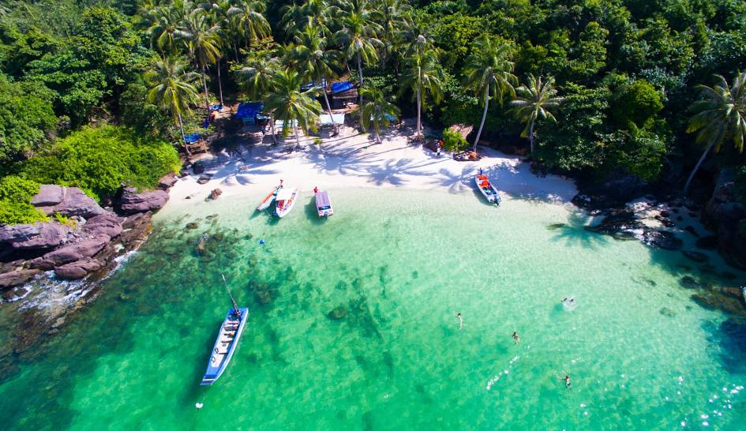
Nếu bạn là người yêu thích vẻ đẹp hoang sơ của thiên nhiên thì Hòn Móng tay là địa điểm vui chơi Phú Quốc bạn không nên bỏ qua. Trải qua bao thăng trầm của cuộc sống, Hòn Móng tay vẫn giữ được nét đẹp tự nhiên vốn có của mình. Đây chính là điểm nhấn ấn tượng thu hút rất nhiều khách du lịch ghé thăm. Bên cạnh đó, Hòn Móng tay còn thuộc top 5 Hòn đẹp nhất tại Phú Quốc. Với làn nước xanh ngắt, nhìn thấy cả màu sắc của những rạn san hô lấp ló dưới biển. Ngoài ra, trên đảo còn có một loại cây gọi là sơn hải tùng (cây móng tay) rất đáng để bạn chiêm ngưỡng.
Bãi Sao
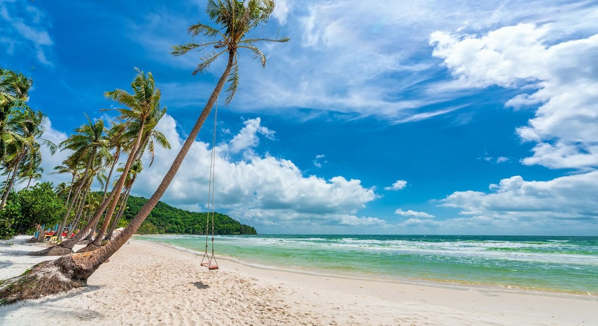
Bãi Sao thuộc phía Nam đảo Phú Quốc. Nơi đây được mệnh danh là bãi biển quyến rũ nhất Phú Quốc. Bởi Bãi Sao may mắn được thiên nhiên ưu ái ban tặng hình dáng tự cánh cung tuyệt đẹp. Hơn nữa, bãi biển còn sở hữu làn nước trong xanh, bờ cát trắng mịn cùng hàng dừa thẳng tắp. Nên người ta ví Bãi Sao mang vẻ đẹp tinh khôi và thơ ngây của một cô gái tuổi dậy thì. Đây chắc chắn sẽ là địa điểm du lịch ở Phú Quốc mà du khách đang tìm kiếm. Ra khơi xa hơn, đôi khi bạn sẽ tìm thấy những đàn cá nhỏ, cá mũi kim, và thậm chí cả mực dưới mặt nước. Bãi Sao chính là điểm hẹn thư giãn tuyệt vời thu hút du khách đến du lịch Phú Quốc..
Suối Tranh
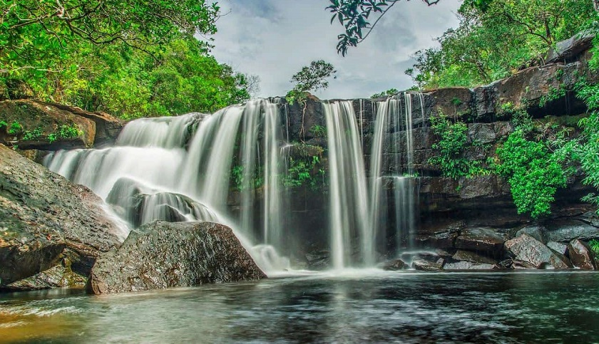
Đẹp như một bức tranh vẽ với dòng nước trắng xóa len lỏi qua những tảng đá phủ rêu phong, Suối Trang là sự hòa hợp của hoa cỏ, núi rừng, biển và suối. Đây cũng là địa điểm du lịch Phú Quốc thích hợp cho nghỉ ngơi và tổ chức những chuyến cắm trại, dã ngoại thú vị.
Rạn San Hô Nam Đảo
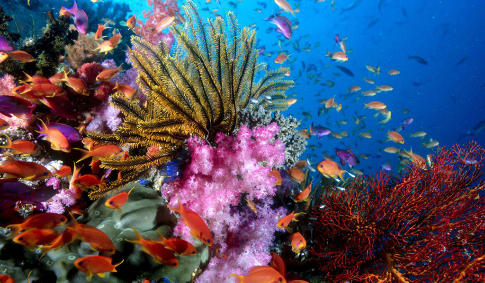
Nếu đã đặt chân đến Phú Quốc thì không thể không trải nghiệm hoạt động lặn ngắm san hô. Và Nam Đảo chính là một trong những địa điểm lặn san hô không nên bỏ qua. Bao phủ xung quanh Nam Đảo là nước biển trong vắt như một dải lụa xanh khổng lồ. Thấp thoáng dưới đáy biển là những rạn san hô đầy màu sắc. Để khám phá hết Nam Đảo bạn có thể thuê thuyền hoặc cano để đi dạo xung quan
Bãi Trường
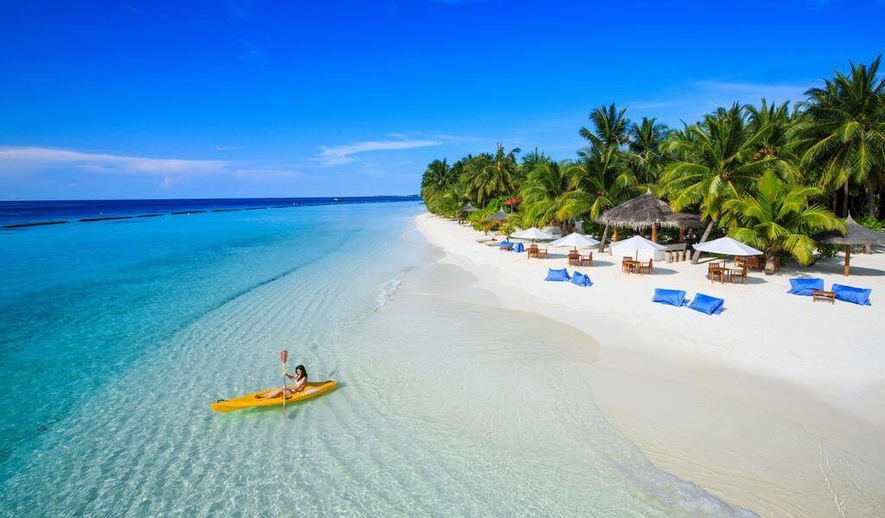
Đây là bãi biển dài nhất Phú Quốc với chiều dài lên đến 20km. Bãi Trường được chia làm nhiều đoạn nhỏ, gồm 2 bãi chính là Bắc Long Beach và Nam Long Beach. Trải dài từ mũi Dinh Cậu cho đến Khóe Tàu Rũ. Tuy nhiên, chúng đều được nối với nhau bởi những ghềnh đá và vài làng chài nhỏ ven biển. Bên cạnh đó, Bãi Trường là nơi nuôi cấy ngọc trai duy nhất tại Phú Quốc. Bởi môi trường nước thuận lợi. Khi ghé thăm Bãi Trường, bạn có thể tắm biển, lặn ngắm san hô, ngắm hoàng hôn và thưởng thức những món ăn hải sản tươi sống hấp dẫn.
Ẩm thực
Gỏi Cá Trích Phú Quốc
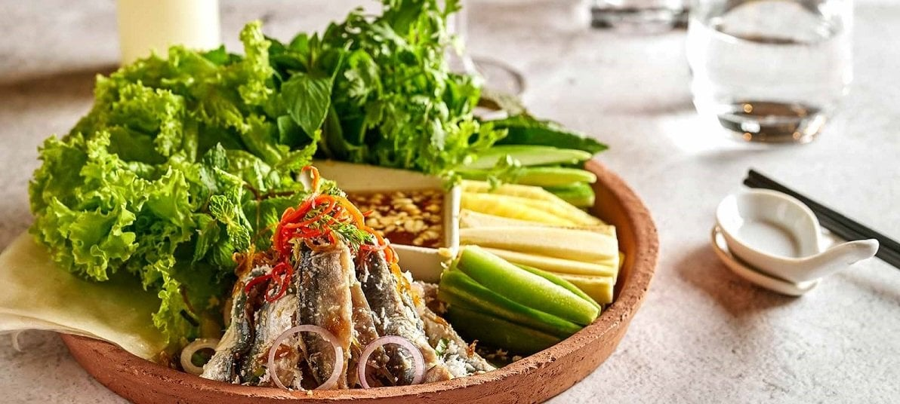
Gỏi cá trích Phú Quốc là món ăn đặc sản nổi tiếng với hương vị lạ miệng. Sự kết hợp hài hòa giữa thịt cá tươi sống được lấy từ phần lườn hai bên để bóp gỏi, và các nguyên liệu dừa nạo, hành tây, hành tím thái mỏng, ớt thái mỏng tạo nên độ ngọt béo cay cay vừa phải. Nếu bạn muốn thưởng thức món gỏi cá trích Phú Quốc lừng danh, hãy ghé đến Nhà hàng Vườn Táo- số 1 đường Trần Hưng Đạ, Dương Tơ, Phú Quốc nhé!
Bún Quậy Phú Quốc
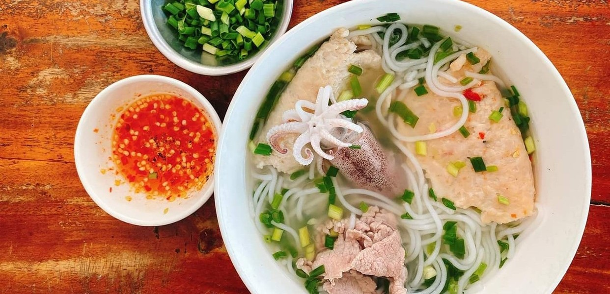
Bún quậy Phú Quốc là một món ăn đường phố nổi tiếng của đảo ngọc Phú Quốc, được nhiều du khách yêu thích bởi hương vị thơm ngon, đậm đà, mang đậm hương vị của biển cả. Món ăn này khá giống bún nước lèo, với phần nước dùng được nấu từ xương heo, tôm khô và các loại gia vị. Bún quậy Phú Quốc thường được ăn kèm với các loại rau sống và hải sản như mực, chả cá, trứng cút,... Khi ăn, bạn sẽ dùng đũa quậy đều bún, tôm khô, chả cá và nước dùng để tạo thành hỗn hợp sền sệt, thơm ngon.
Cá Mú Nướng Mọi
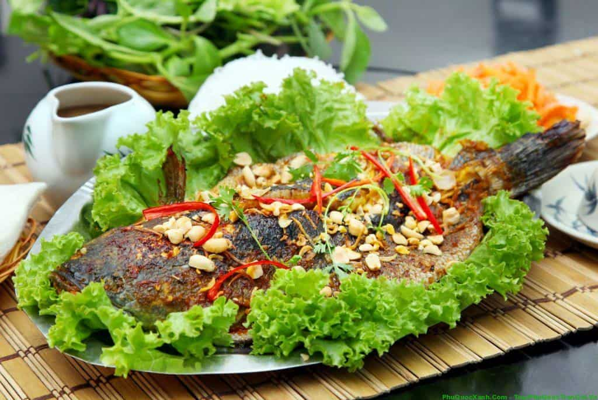
Được thiên nhiên ưu ái ban cho nguồn thủy hải sản phong phú, Phú Quốc sở hữu nhiều loại sơn hào hải vị. Trong số đó, phải kể đến cá mú nướng mọi Phú Quốc - món ngon lạ miệng, hấp dẫn nhất huyện đảo này. Cá mú khi còn tươi nguyên mới đánh bắt được làm sạch và nướng trui trong than hồng. Khi thịt chín tới thì mùi hương thơm ngất ngây khó mà kiềm lòng. Vừa thường thức cá mú nướng mọi, vừa nhâm nhi rượu sim rừng cay cay thì còn gì thi vị bằng, #teamKlook nhỉ?
Hoạt động
Vui Chơi Tại VinWonders Phú Quốc
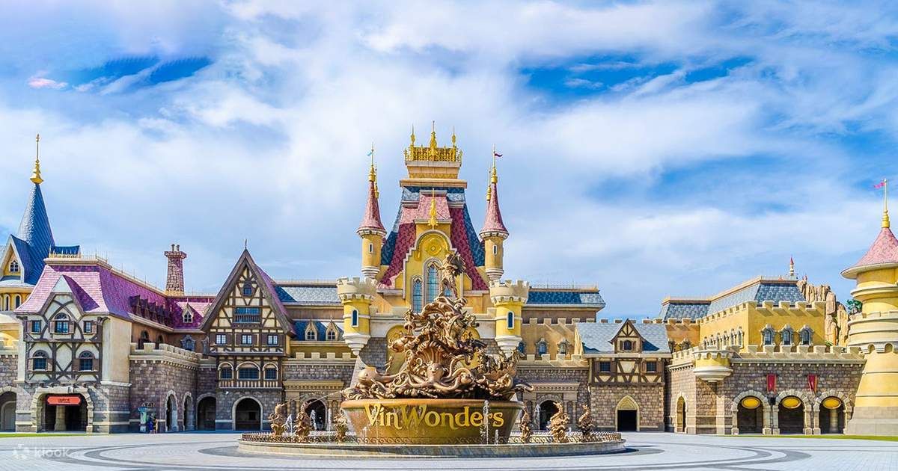
VinWonders Phú Quốc có diện tích gần 50 ha, được chia làm 6 khu vực lớn với 12 chủ đề liên quan tới các câu chuyện cổ tích, truyền thuyết nổi tiếng trên thế giới cùng các nền văn minh hấp dẫn thú vị như Châu Âu Trung Cổ, miền Tây hoang dã, các ngôi làng chiến binh và lâu đài thủy cung. Đến với VinWonders, du khách sẽ được trải nghiệm không gian lộng lẫy, kỳ ảo, cùng rất nhiều trò chơi độc đáo và show diễn ấn tượng. Đây chắc chắn là một trong những địa điểm du lịch Phú Quốc hứa hẹn nhất.
Đi Bộ Dưới Biển Ngắm San Hô
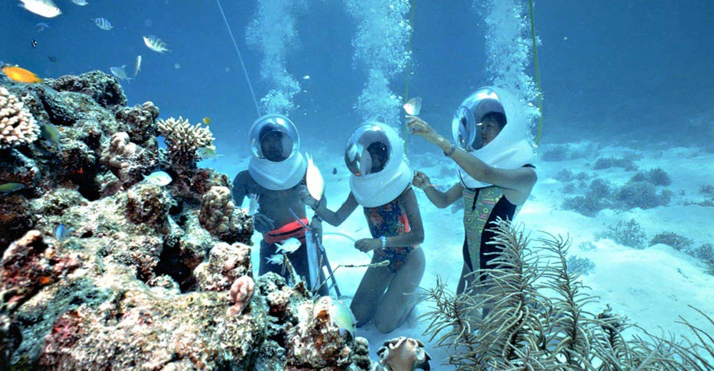
Tại mũi Kỳ Lân, Hòn Thơm, không ít du khách đã phải trầm trồ khó tin khi lần được trải nghiệm cảm giác đi bộ dưới biển, trực tiếp tiếp xúc với vô số động vật nhỏ của đại dương và ngắm nhìn hơn 200 loài san hô đẹp rực rỡ ở độ sâu 5-6m so với mặt nước biển. Một điểm khác biệt của hành trình này chính là việc bạn được đội một chiếc mũ mang đậm phong cách phi hành gia. Với chiếc mũ đặc biệt này, bạn có thể hít thở bình thường và dễ dàng tận hưởng bức tranh sống động dưới lòng đại dương.
Chèo thuyền Kayak
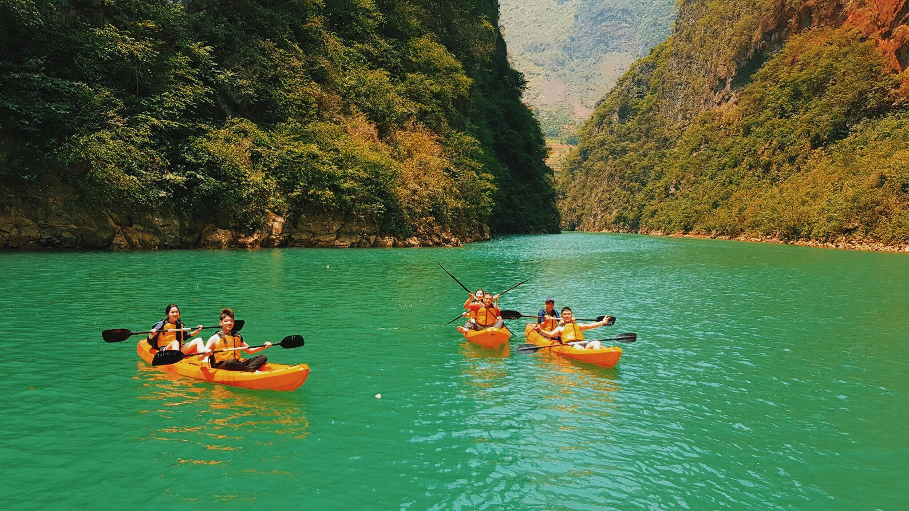
Nghĩ tới khu vực hoang sơ, chưa được khai phá nhiều, nhiều người không khỏi lo lắng liệu Bắc đảo Phú Quốc có gì chơi hay không. Thế nhưng, tại khu vực làng chài Rạch Vẹm, có một hoạt động cực kỳ thú vị mà các bạn trẻ đều khao khát một lần tham gia. Đó là chèo thuyền Kayak trên dòng sông Cửa Cạn. Không chỉ thử thách kỹ năng, đây còn là cơ hội cực tốt để bạn có thể lưu lại những bức hình sống ảo thơ mộng mà độc đáo giữa lênh đênh sông nước.
Di chuyển
Máy bay

Nếu bạn đang có kế hoạch du lịch Phú Quốc thì máy bay là lựa chọn hàng đầu, vừa nhanh chóng, vừa an toàn, đặc biệt khi săn được những tấm vé máy bay ưu đãi thì mức giá cũng không quá chênh lệch với giá vé xe khách hay tàu hoả.
Hiện nay chúng tôi khai thác đường bay đến Đà Nẵng với giá vé hấp dẫn như Hà Nội - Phú Quốc, Hồ Chí Minh - Phú Quốc, Đà Nẵng - Phú Quốc,... theo hai chiều khứ hồi.
Tàu thuyền
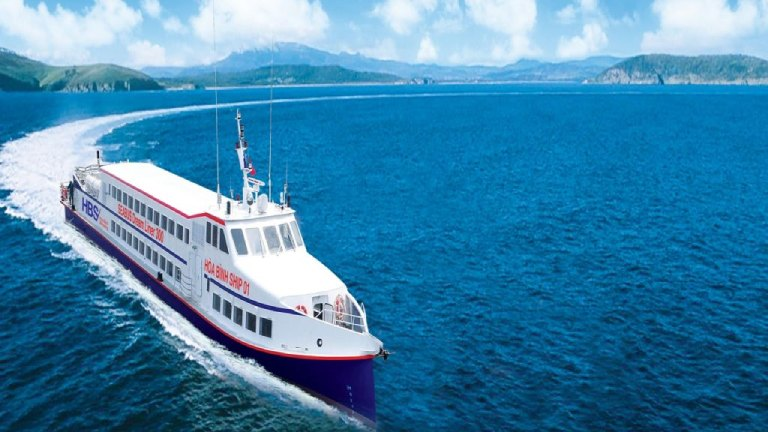
Nếu bạn muốn một phương tiện di chuyển đến Phú Quốc có không gian riêng và giá cả hợp lý thì loại tàu biển thường là lựa chọn bạn nên tham khảo. Loại tàu thường tuông đối an toàn bởi khả năng di chuyển với vận tốc không quá lớn.
Với không gian mở, bạn có thể vừa ngắm phong cảnh thiên nhiên tươi đẹp của huyện đảo Phú Quốc. Không những thế, khi cập bến, du khách cũng có thể quan sát và biết thêm về con người và hoạt động của ngư dân nơi đây.
Khi đi tàu biển hoặc phà, du khách có thể thoải mái đón những cơn gió mát lành từ biển cả mênh mông. Bạn như được đắm chìm vào không xanh tươi mát. Mang đến cho bất cứ ai ngồi tàu cảm giác sảng khoái và hưng phấn.